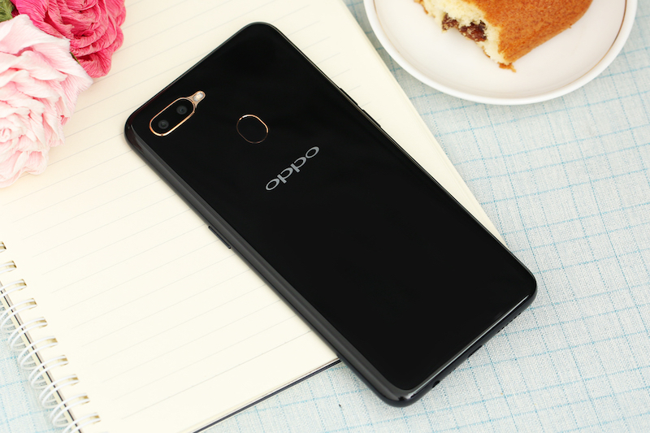
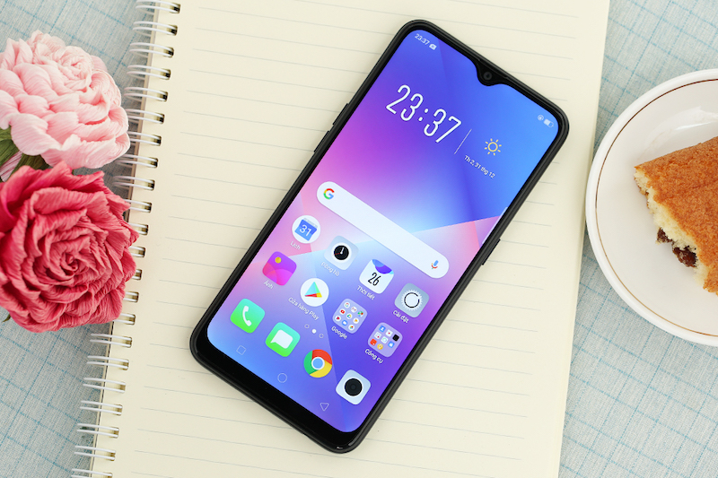
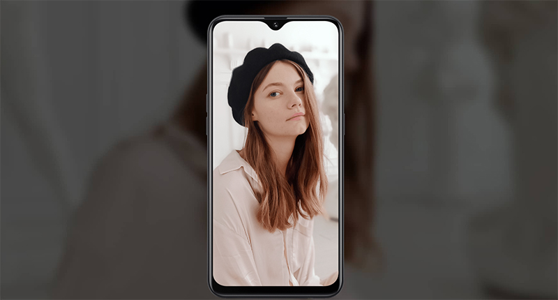
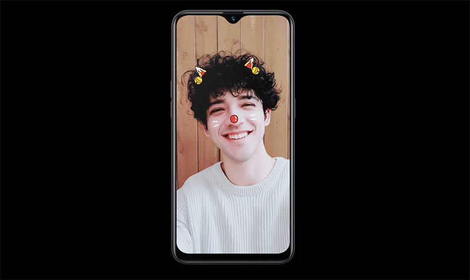
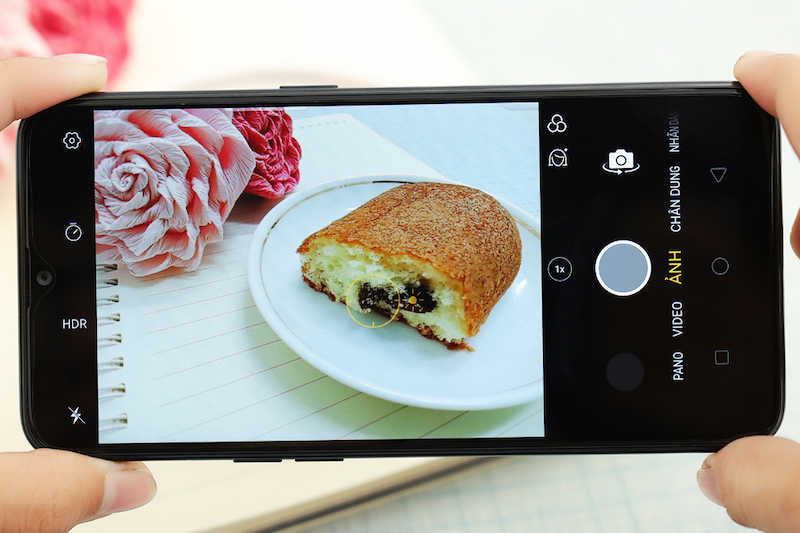
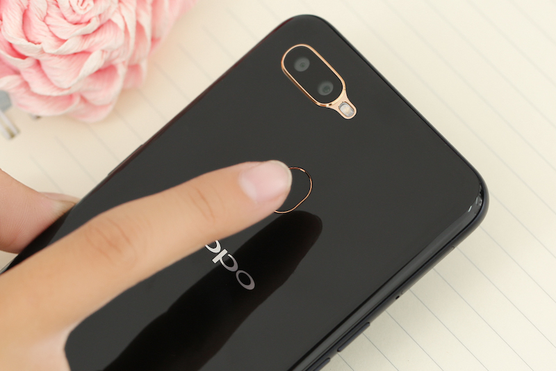

Đó là một thiết kế thời trang, nhiều màu sắc nổi bật giúp các bạn trẻ tự tin thể hiện cá tính của mình.
Màn hình giọt nước ở mặt trước sẽ gây ấn tượng cho người dùng ngay từ cái nhìn đầu tiên với kích thước 6.2 inch.
Trải nghiệm xem hình ảnh hay xem phim trên chiếc OPPO A5s sẽ được tăng trải nghiệm lên rất nhiều khi các cạnh viền của máy khá mỏng khiến màn hình như tràn ra xung quanh.
Nhắc đến OPPO thì không thể không nhắc đến camera selfie và mình chắc chắn chiếc OPPO A5s sẽ không làm bạn phải thất vọng.
Camera trước của máy có độ phân giải 8 MP và vẫn sở hữu chế độ làm đẹp "trứ danh" tới từ OPPO.
Việc của bạn chỉ cần đưa máy lên và chụp cùng bạn bè còn lại việc làm đẹp thế nào cho tự nhiên, phù hợp với khung cảnh cứ để OPPO A5s lo. Không chỉ có camera selfie, máy cũng sở hữu camera chính chất lượng khá tốt với độ phân giải chính 13 MP + cảm biến phụ 2 MP.
Ưu điểm của máy là khả năng lấy nét cũng như chụp rất nhanh giúp bạn bắt trọn mọi khoảnh khắc đẹp trong cuộc sống. Lâu lâu bạn cũng có thể tự chụp cho mình những bức ảnh chân dung với phần hậu cảnh được tách bạch khá tốt từ chế độ chụp xóa phông của OPPO A5s.
OPPO A5s chạy ColorOS 5.1 khá đơn giản, không cồng kềnh và khá trơn tru, ổn định trong quá trình sử dụng hàng ngày.
Smartphone này cũng có các tính năng nổi bật như cảm biến vân tay mặt lưng hay hỗ trợ giọng nói tích hợp, ứng dụng AI, có ít ứng dụng được cài đặt sẵn hơn, không có quảng cáo trong hệ thống...
